汇编语言与接口设计
一、基础知识
本章实际上回答了三个问题：
- 为什么有汇编语言
- CPU是怎么和存储器交互的
- 地址总线、数据总线、控制总线在做什么
机器语言 就是机器指令的集合，它的一串二进制0和1，对应着 CPU 能识别并执行的电平信息
机器语言的缺点也很明显，不直观、不好记、容易写错、错了难以排查
汇编语言 本质上是机器指令的助记符形式。它并没有改变机器的本质，只是把难记的二进制换成了人类更容易理解的符号表示
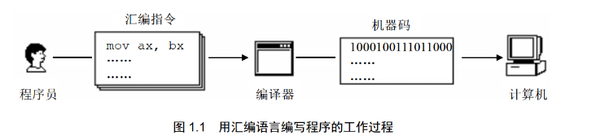
汇编语言由 3 部分组成：
- 汇编指令：有对应机器码，最终会被 CPU 执行
- 伪指令：没有对应的机器码，主要写给编译器，由编译器执行
- 其他符号：由编译器识别，是编写源程序的时候用来组织表达式的，不是 CPU 直接执行的机器指令
Note
汇编语言的核心是 汇编指令，它决定了汇编语言的特性
存储器、指令与数据
CPU是计算机的核心，工作时必须有两样内容：指令、数据
指令和数据在存储器中没有本质区别，都是二进制信息。它们的区别在于CPU把它们当作什么解释
89D8H可以看作十六进制数据，也可以看为mov ax, bx
存储器会被划分为多个存储单元，每个存储单元都有编号，如下图的 0~127 编号
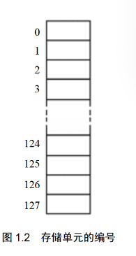
这里需要明确以下容量单位：
1 bit：一个二进制位1 Byte = 1 bit：一个存储单元通常存放1 Byte(一般用B来简称Byte)1KB = 1024B、1MB = 1024KB、1GB = 1024MB、1TB = 1024GB
CPU 对存储器读写
CPU想从存储器里面读写数据，需要完成 3 类信息的交互
- 地址信息，告诉存储器：我要操作哪个存储单元
- 控制信息，告诉存储器：我要读还是要写；我要选中哪个器件
- 数据信息，真正传输的内容，也就是读出的数据或写入的数据
为了传递这 3 类信息，计算机中有 3 类总线，这三条线合起来构成了CPU和外部器件沟通的主干道
- 地址总线：传递地址信息
- 数据总线：传递数据信息
- 控制总线：传递控制命令
读操作过程
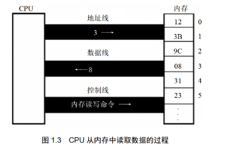
- CPU通过 地址总线 发出地址
3 - CPU通过 控制总线 发出
读命令 - 存储器把 3 号单元中的数据，通过 数据总线 送回CPU
写操作过程
-
CPU 通过 地址总线 发出地址
3 -
CPU 通过 控制总线 发出
写命令 -
CPU 通过 数据总线 把数据
8送到该单元
汇编视角下的读写操作
按照课本意思，我们可以总结为这些内容：
- 机器码负责驱动 CPU 完成这些读写动作
- 汇编指令只是机器码的便于理解的写法
例如 MOV AX,[3] 的含义就是 把内存中 3 号单元的内容送入寄存器 AX
三种总线
地址总线 负责传递地址信息。
如果有一个CPU有 N 根地址线，那么它最多能表示 \(2^N\) 个不同地址
Note
地址总线宽度决定CPU寻址能力
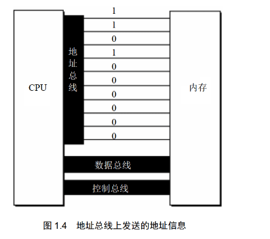
数据总线 负责传递数据
如果有一个CPU有 N 根数据线，那么它一次传递 n bit 数据(注意是位，不是字节)
Note
- 8088系列CPU：8位数据总线
- 8086系列CPU：16位数据总线
那么对于数据 89D8H，8088CPU需要传2次（由于小端序，所以先传 D8）；8086只需要传1次
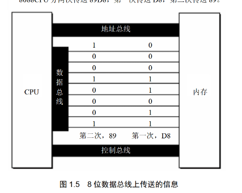 |
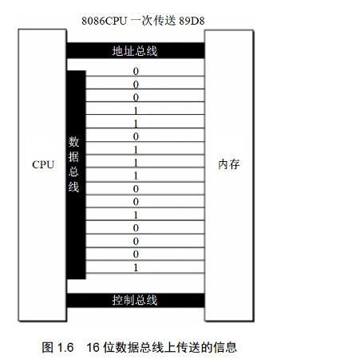 |
|---|---|
控制总线 负责传递控制命令
如果有一个CPU有 N 根控制总线，那么它能有 n 种控制提供
Note
控制总线宽度决定了CPU对外部器件的控制能力
主板、接口卡与各类存储器芯片
主板
在一台 PC 种，主板上连接着很多部件，这些不见通过总线互相连接
- CPU
- 存储器
- 外围芯片
- 扩展插槽
- 各类接口卡
接口卡
像显示器、音箱、打印机这些外设，CPU 一般**不会直接控制**，而是通过接口卡去控制。即
CPU -> 总线 -> 接口卡 -> 外设
各类存储芯片
- RAM：随机存储器
- 可读可写，断电后内容丢失
- 主要用于存放CPU正在使用的程序和数据
- ROM：只读存储器
- 只能读不能随意写，断电后内容不丢失
- 常用来存放BIOS
- 接口卡上的RAM
- 例如显卡的显存
- 用于暂存需要高速输入/输出的数据
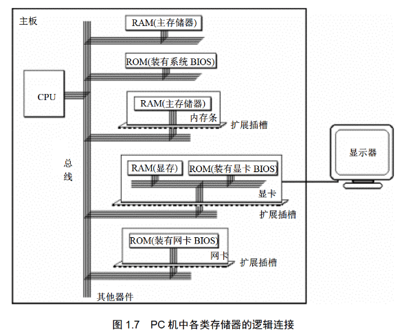
内存地址空间
虽然 RAM、显存、ROM 这些东西在物理上是不同的芯片，但是从CPU的角度来看，它们都挂在总线上，并且都能通过地址访问。于是 CPU 就会把它们统一看成一个逻辑上的大存储器。这个逻辑上的大空间就叫做 内存地址空间
Note
可以这样理解：在物理层面上，这是很多不同的芯片；但是从逻辑层面（也就是数据规定），这是一个统一的地址世界，各个芯片间的地址是紧邻的。如下图所示
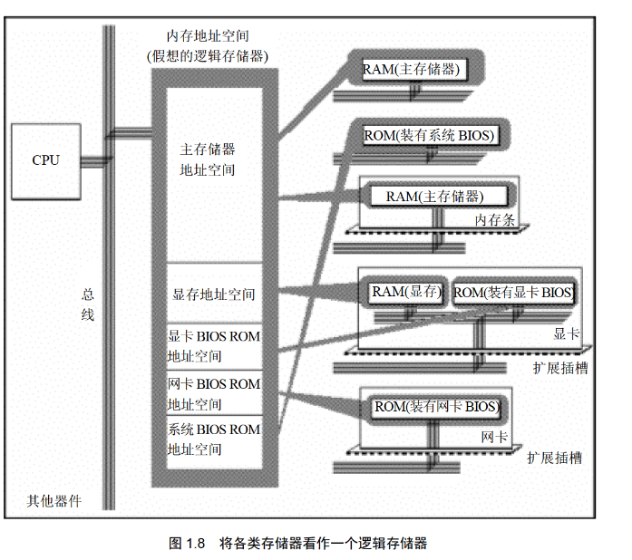
地址空间本质
对于每一块物理存储器，在这个逻辑空间里会占用一段地址范围，如下图所示
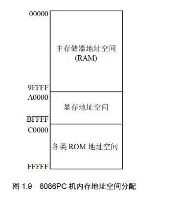
- 我们往
1000H写数据，实际写入了主存 RAM - 往
B0000H写数据，实际写入了 显存空间 - 往
D0000H写数据，实际写入了各类 ROM
地址空间大小控制
地址空间大小受 地址总线宽度 限制。若地址总线宽度为 N ，则最多可以表示 \(2^N\) 个地址
Note
8086系列CPU：20位地址总线，那么最大地址空间为 \(2^{20}=1 \text{MB}\)
80386系列CPU：32位地址总线，最大地址空间为 \(2^{32}=4\text{GB}\)
小结
-
机器语言是机器指令的集合，本质是二进制信息
-
汇编语言是机器指令的助记符表示
-
汇编语言由汇编指令、伪指令和其他符号组成
-
CPU 工作离不开存储器
-
指令和数据在存储器里没有本质区别，都是二进制
-
存储单元从 0 开始编号
-
1Byte = 8bit
-
地址总线决定寻址能力
-
数据总线决定一次传送的数据量
-
控制总线决定控制能力
-
内存地址空间是 CPU 视角下的逻辑存储空间
-
不同物理器件可以映射到统一地址空间中的不同地址段
二、寄存器
本章主要介绍了这样一个主线：程序员通过指令修改寄存器，CPU通过寄存器中的地址信息去访问内存
一个典型CPU中有：
- 运算器：负责信息处理
- 控制器：负责控制工作流程，控制各种器件进行工作
- 寄存器：负责信息存储
- 内部总线：负责部件之间传数据
寄存器介绍
8086的寄存器都是 16位 的，即一次可以存放 16个二进制位，等于 2 个字节
AX、BX、CX、DX 这四个寄存器最常被当作普通数据存储单元使用，因此叫做 通用寄存器
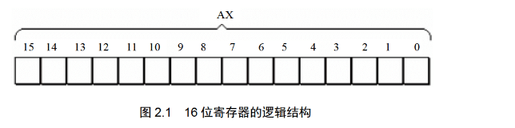
为了兼容早期 8 位CPU程序设计习惯，8086的四个16位寄存器都支持拆分使用
| 原寄存器 | 高8位 | 低8位 |
|---|---|---|
AX |
AH |
AL |
BX |
BH |
BL |
CX |
CH |
CL |
DX |
DH |
DL |
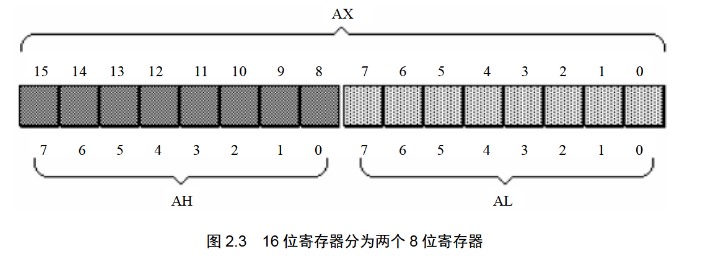
数据在存储器中的存储
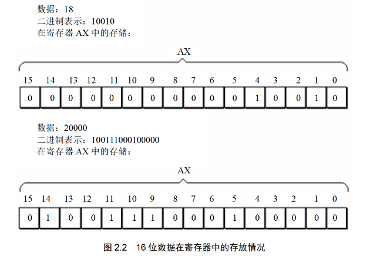
如图所示，这个字型数据的大小是 20000，但如果将它看作两个独立的字节型数据，它们的大小分别是 78 和 32
字节与字
8086一次可以处理两种尺度的数据
- 字节：8 bit，可以放入 8 位寄存器
- 字：16 bit，由两个字节组成
对于8086来说，一个字放在 AX 中，AH 和 AL 既可以看作两个独立的 8 位数据，也可以看作一个 16 位数据的高低两部分
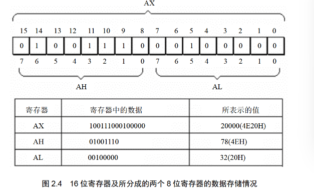
汇编指令
课本这里介绍了 mov 和 add
mov
其含义为将右边的值送到左边去，直接覆盖写入
| 汇编指令 | CPU完成的操作 | 高级语言描述 |
|---|---|---|
| mov ax, 18 | 将 18 送入寄存器 AX | AX=18 |
| mov ah, 78 | 将78 送入寄存器 AH | AH=78 |
| mov ax, bx | 将bx中的数据送入寄存器AX | AX=BX |
add
左边=左边+右边，结果一般存回左操作数
| 汇编指令 | CPU完成的操作 | 高级语言描述 |
|---|---|---|
| add ax, 8 | 将ax的值加8 | AX=AX+8 |
| add ax, bx | 将bx的值加到ax上 | AX=AX+BX |
指令执行过程中，寄存器的变化
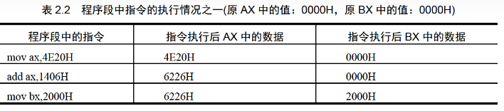
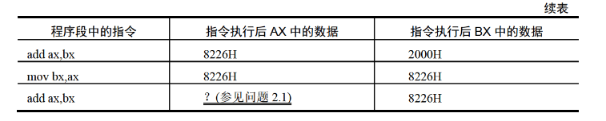
其中问题2.1强调了一个地方：16位寄存器只能保留低4位十六进制数，会发生截断
8086与物理地址
物理地址
CPU访问内存单元的时候，必须给出内存单元地址。而在内存这个一维线性空间中，每个单元都有唯一编号，这个唯一编号就叫 物理地址
可以理解为内存单元的门牌号
8086
8086被称为16位结构的CPU是有如下原因
- 运算器一次最多处理 16 位数据
- 寄存器最大宽度是 16 位
- 寄存器和运算器之间的通路是 16 位
或者换句话来说：8086内部一次最擅长处理的是16位数据
不过8086的物理结构上，它的 物理总线是 20 位，但 内部寄存器只有 16 位，要怎么操作呢？可以看下一节
8086给出物理地址的方法
8086采用的方法是 \(物理地址=段地址\times 16 + 偏移地址\)
这一部分更详细的介绍可以看笔者的OS笔记的 段地址部分
Note
我们用一个例子作为演示下图
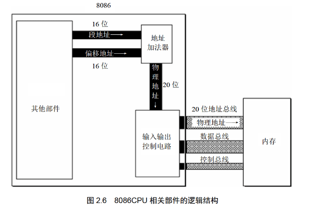
现有16位段地址 1230H；16位偏移地址 00C8H
两者同时加入到地址加法器中
段地址：\(1230\text H \times 10\text H=12300\text H\)
加上偏移地址得到物理地址为 \(12300\text H+00C8\text H=123C8 \text H\)
段
内存本身是不会自动分段的，段的概念的提出是为了方便CPU管理
段的简单理解
10000~100FFH 可以看作是一个段
- 它的起始地址是
10000H - 对应的段地址是
1000H - 长度为
100H
段的关键属性
- 段起始地址：由
段地址 × 16得到 - 段内偏移：由偏移地址指出段内具体单元
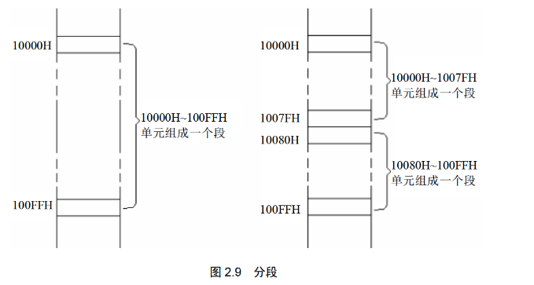
段寄存器
我们刚刚谈到了 段地址 和 偏移地址，现在需要了解段地址存放的地方——段寄存器
8086有 4 个段寄存器，分别为：CS、DS、SS、ES，当CPU访问内存的时候，相关段寄存器会提供段地址。其中，各个段寄存器的一般用途如下：
- CS：管理代码
- DS：常管理数据
- SS：和栈有关
- ES：常作为附加段
CS寄存器与IP寄存器
CS寄存器和IP寄存器主要的作用是用来控制 CPU下一条要执行的指令。先详细介绍一下这两个寄存器
CS：代码段寄存器，用于保存当前代码段的段地址IP：指令指针寄存器，保存当前执行指令的偏移地址
Note
在8086中，CPU会将 CS:IP 所指向的内容作为下一条指令来读取、执行
CPU取指的基本过程
我们假设 CS=M，IP=N，那么CPU读取指令时会从内存地址 \(M\times 16 + N\) 中取得（换句话说，CS就是基地址，IP就是偏移地址），取得后会进行如下过程：
- 从
CS:IP指向的内存单元读取指令 - 把
IP改成下一条指令的偏移地址 - 执行刚才读出的指令
- 循环以上过程
这个就是我们上面说的，被CPU如何读取的意思。如果某个地址的内容是被
CS:IP读取到的，那么他就是指令
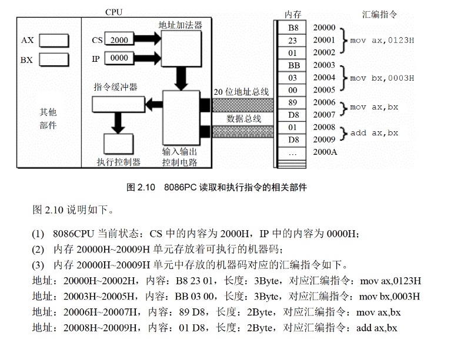
CS、IP指令的修改
要记得：我们常见的 mov 指令是不可以用来修改 CS 和 IP 的。修改方式只有 转移指令，即 jmp 系指令，使用方式如下
jmp 段地址:偏移地址
举例：
jmp 2AE3:3执行后，会使
CS=2AE3H、IP=0003H
jmp 合法寄存器
举例：
jmp ax用寄存器中的值修改
IP，这里的CS是不变的，可以认为是mov IP, ax
代码段
如果我们把一段 连续内存单元 定义为专门存放代码，我们可以称它为 代码段。一般满足这些特性：
- 地址连续
- 起始地址是 16 的倍数
- 长度不超过 64KB
由于CPU指把 CS:IP 所指向的内容认为是指令/代码，所以代码段就是为了规范 CS:IP 的范围
小结
一、本章主线
第二章从寄存器出发，先讲了寄存器中如何存数据、如何用指令修改数据；随后过渡到 8086 的寻址方式，说明物理地址如何由段地址和偏移地址形成；最后引出 CS 和 IP，解释 CPU 如何取指、执行，以及如何通过跳转修改执行位置。
二、本章最重要的结论
-
寄存器部分
-
8086 的通用寄存器
AX、BX、CX、DX都是 16 位 -
AX可以拆成AH和AL -
AH是高 8 位，AL是低 8 位 -
一个字节是 8 位，一个字是 16 位
-
十六进制特别适合观察寄存器中数据的字节结构
-
-
指令部分
-
mov表示传送 -
add表示加法 -
指令是一条一条执行的
-
8 位运算只在 8 位范围内进行
-
16 位运算只在 16 位范围内进行
-
操作对象位数必须一致
-
-
寻址部分
-
物理地址是内存单元的唯一地址
-
8086 的物理地址由“段地址×16+偏移地址”形成
-
“段地址×16”的本质是左移 4 位
-
这个公式的本质是“基础地址 + 偏移地址”
-
-
段与取指部分
-
段不是内存天然自带的划分，而是基于寻址方式形成的管理视角
-
一个段最大长度为 64KB
-
段地址放在段寄存器中
-
CS存代码段地址，IP存当前指令偏移地址 -
CPU 总是从
CS:IP指向的位置读取下一条指令 -
jmp这类转移指令可以修改CS、IP -
让代码段被执行，本质上是让
CS:IP指向它
-
三、寄存器(内存访问)
在第二章中，我们已经知道：
- 8086访问内存时，要靠 段地址×16+偏移地址=物理地址
CS:IP负责找指令- 段寄存器里面存放段地址
接下来的第三章中，重点从“CPU怎么取指令”转为了：程序员怎么样用寄存器去访问内存中的数据
内存中字的存储
Note
本节重点在于：
- 内存的基本单元是 字节单元
- 一个字是 16 位，所以放进内存的时候要占 2 个连续字节单元（8086CPU）
- 在 8086 中，低字节放低地址，高位字节放高地址（小端序）
字节单元和字单元
内存里一个地址对应一个 字节单元，每个单元只能放 8 位，即 1 字节。但一个 字 有 16 位，所以一个字 必须拆开，放到两个连续的 字节单元 里
例如某个字放在地址
0开始的地方，那么它会占掉：0号单元；1号单元。于是我们可以把这两个连续单元一起看成一个 字单元如果这个字单元的起始地址是
N，那就叫 N地址字单元，表示由N号字节单元和N+1号字节单元共同组成注意注意，这里的N可以是任意整数，也就是说奇数开头是允许的
8086中字的存放顺序
8086规定 低字节放在低地址单元；高位字节放高地址单元
例如数据
4E20H。高位字节为4EH，低位字节为20H。如果从地址0开始放到内存中，那么：
- 0号单元存
20H- 1号单元存
4EH
DS和[address]
之前代码段访问的方式是 CS:IP，本节介绍数据段的访问方式，即 [0] 这种形式如何访问
DS的作用：提供基地址。
DS是一个段寄存器，用来存放 要访问的数据所在段的段地址。或者说，当访问普通数据的时候，经常默认：
- 段地址在
DS中 - 指令中只写偏移地址
[address]的作用：提供偏移地址。
课本中 [......] 表示一个内存单元。例如 [0] 表示偏移地址为 0 的那个内存单元。
[0]实际上表示的是DS:0
[1]实际上表示的是DS:1
由于 8086不支持把立即数送入段寄存器，所以我们想要修改 DS 的值需要经过一系列操作
mov bx, 1000H ; 1000H -> bx
mov ds, bx ; bx -> ds
mov al, [0] ; [ds:0] -> al，即 [1000:0] -> al
mov [0], al ; al -> [1000:0]
字的传送
上一节介绍了如何访问字节，这一节介绍如何扩展到 字 的访问。
16位寄存器传“字”
如果 mov 的目标或源就是 16 位寄存器，那么这条指令传送就是 16 位传递，也就是传一个字
mov ax,[0]
上面这个指令在执行时，CPU会从 DS:0 开始取一个字，也就是取两个连续字节，假设：
- 低地址
0中的字节23H - 高地址
1中的字节11H
按照小端序，即低字节在低地址，高字节在高地址 \(\Rightarrow\) AX=1123H，或者 AL=23H,AH=11H
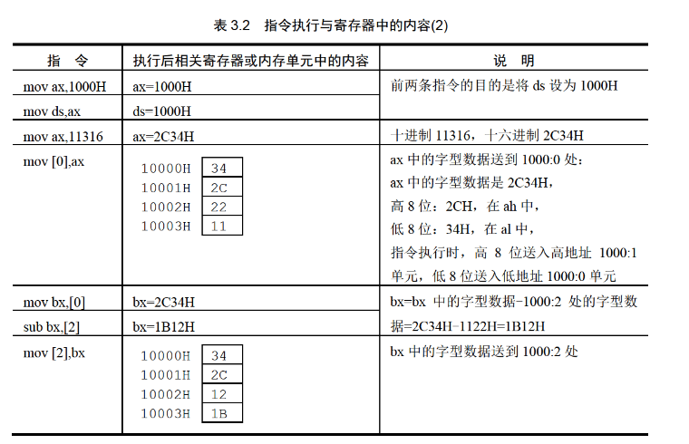
mov/add/sub 指令
mov 可以有如下这些形式
mov ax, 8 ;mov 寄存器，数据
mov ax, bx ;mov 寄存器，寄存器
mov ax, [0] ;mov 寄存器，内存单元
mov [0],ax ;mov 内存单元，寄存器
mov ds, ax ;mov 段寄存器，寄存器
mov ax, ds ;mov 寄存器， 段寄存器
mov [0],cs ;mov 内存单元，段寄存器
mov ds,[0] ;mov 段寄存器，内存单元
只要位数匹配，语法允许，它能在寄存器、段寄存器、内存之间随意做传送
add/sub 可以有这些形式
add ax,8 ;add 寄存器, 数据
add ax,bx ;add 寄存器, 寄存器
add ax,[0] ;add 寄存器, 内存单元
add [0],ax ;add 内存单元, 寄存器
sub ax,9 ;sub 寄存器, 数据
sub ax,bx ;sub 寄存器, 寄存器
sub ax,[0] ;sub 寄存器, 内存单元
sub [0],ax ;sub 内存单元, 寄存器
Note
需要注意的是，转移指令的位数一定要匹配，一定要看清楚
mov al, [0] ;传送一个字节
mov ax, [0] ;传送一个字
数据段
本节总结了一下上述的内容。前面我们知道了：
- 一段内存可以被人为的定义为“段”
DS可以存放段地址[address]表示偏移地址
那么就可以得到：如果把一段内存专门拿来存放数据，那它就可以叫做数据段
数据段 应当满足这些条件：
- 一组地址连续的内存单元
- 起始地址是 16 的倍数
- 长度不超过 64KB
- 我们规定用它来存放数据
数据段数据的访问
即刚刚的 DS 与 [address] 章节的内容
- 先把数据段的段地址送入
DS - 通过
[偏移地址]访问这段中的具体单元
Note
这里需要注意一下，我们如果连续访问的单元是字的话，需要跳着连续
mov ax,123BH
mov ds,ax
mov ax,0 ;因为是ax存储字的形式，而一个字是两个字节，所以后面都是跳着连续
add ax,[0]
add ax,[2]
add ax,[4]
第二点要注意的是 DS 为多少，当访问的时候一定要注意 DS 目前指向何处